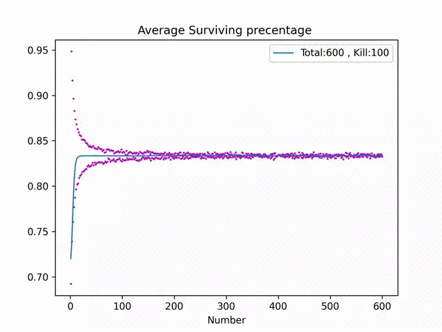

Code by Red alpaca at 2022.9
Out of 600 people, if one person is randomly killed each time from odd-numbered positions, which number is the safest?
Original question: kill-odd-people by zhihu
The definition of "the safest person" can be: Process with the rule until only one number left, caculate the total probablity of the number survive, and we thought that the probability higher the person safer.

def generateKill(Size = 100000, Num = 600, Kill = 599):
M = Kill # How many person to kill
Num = Num # Total number of people
Size = Size # Total simulations
Ar = [0 for a in range(Num)]
for i in range(Size):
a = Test(Num,M)
for k in range(Num-M):
Ar[a[k]-1] = Ar[a[k]-1] + 1
y_data = list(map(lambda x:x/Size ,Ar))
x_data = [i for i in range(1,Num+1)]
# Smoothing the original data -> to decrease the noise
# With smoothing + interpolation, we are able to draw a smooth curve.
# As the edge points are directly assigned in the shrinking binomial method, a slice method is needed for fine-tuning
ys = waveFilter_iterator(smooth_average, y_data, 600, 5)
ys = smooth_average_slice(ys, 20)
ys = ys[:Num] # to ensure the data length to be NUM
# Interpolation to generate multiple sampling points for smooth curve
# Note: if the curve has noise, denoising should be done before interpolation
model = make_interp_spline(x_data, ys)
xs = np.linspace(1,600,24000)
ys = model(xs)
ax = plt.subplots()
plt.plot(xs,ys, label="Total:%d , Kill:%d"%(Num,M),linewidth=1.2)
plt.scatter(x_data[:600], y_data[:600], c= 'm', s=1)
plt.legend()
plt.xlabel("Number")
plt.title("Average Surviving precentage ")
savePath = './' + str(Kill) + '.jpg'
plt.savefig(savePath, dpi = 300)
def Test(Num = 600, M = 600):
Origin = list(range(1,Num+1))
i = 0
while len(Origin) > Num - M:
a = rand.randint(1,Num-i)
if a%2 == 1:
Origin.pop(a-1)
i = i+1
return Origin
# When the window_size is large, the errors generated at the edges are larger than the initial function,
# especially when the slope of the curve tangent is large.
# However, at the same time, it will also be smoother.
def smooth_average_slice(interval, window_size):
if window_size % 2 != 0:
window_size += 1
result = []
p = 0.5
begin = 0
end = len(interval)
width = int(window_size / 2)
n = window_size
bino = stats.binom(window_size, p)
for index, value in enumerate(interval):
left = min(width, index - begin)
right = min(width, end - index - 1)
center = int((n+1)*p)
x_range = np.arange(center-left, center+right)
weights = bino.pmf(x_range)
value_avg = np.average(interval[index-left : index+right], weights = weights)
result.append(value_avg)
return result
{kind=link}